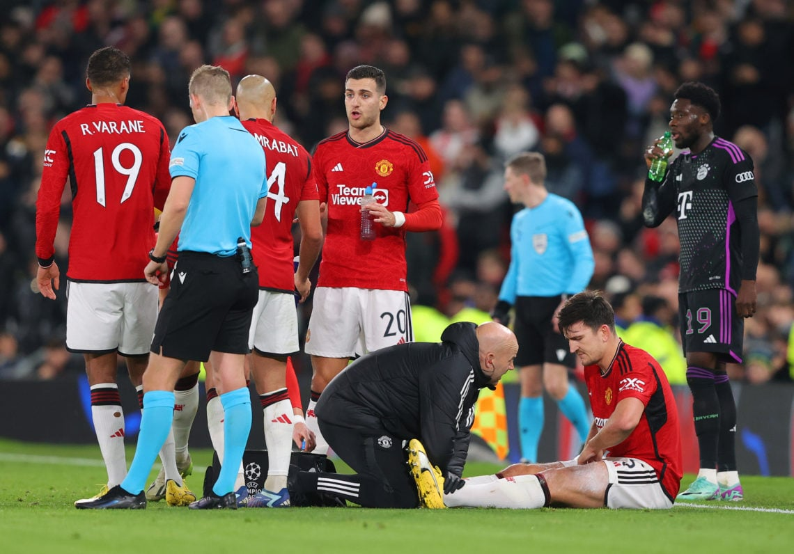

CÚ SỐC CHO MAN UNITED
Đội chủ sân Old Trafford tiếp tục gặp nhiều vấn đề về lực lượng khi mùa
giải bước vào giai đoạn nước rút.
Manchester United đã phải hứng chịu một chấn thương không mong muốn sau khi Harry Maguire buộc phải rút khỏi đội tuyển Anh. Theo đó, cựu sao Leicester City đang đối mặt với nỗi lo phải tiếp tục nghỉ thi đấu thời gian tới.Maguire đã góp mặt trong trận thua với tỷ số 0-1 của tuyển Anh trước Brazil vào cuối tuần qua, trong đó đồng đội trẻ Kobbie Mainoo cũng có trận ra mắt Tam Sư.

Macguire dính chấn thương sau trận đấu
Liên đoàn bóng đá Anh xác nhận Maguire đã trở lại Manchester United để đánh giá lại tình hình sau khi dính chấn thương. Fabrizio Romano đưa tin Maguire "dự kiến sẽ không phải ngồi ngoài lâu vì chấn thương ban đầu được mô tả là không nghiêm trọng.
Vẫn chưa có thêm thông tin chi tiết nào về tình trạng của Maguire. Nhưng đây thực sự là điều khiến Man Utd đứng ngồi không yên. Maguire vừa mới trở lại sau chấn thương. Anh vào sân thay người trong chiến thắng 4-3 của Man Utd trước Liverpool ở tứ kết FA CUP
Lúc này đây, Man United chỉ còn đúng hai trung vệ lành lặn. Đó là Raphael Varane và Victor Lindelof. Cặp đôi này vẻ chắc chắn sẽ sẵn sàng cho trận đấu tiếp theo tại Premier League, gặp Brentford.
Trung vệ người Pháp đã chia tay sự nghiệp thi đấu quốc tế và hiện đang nghỉ ngơi. Trong khi đó, cầu thủ người Thụy Điển vẫn lên tuyển tập trung đều đặn. NHM Quỷ đỏ hy vọng Lindelof sẽ không gặp bất kỳ vấn đề gì.
Thật vậy, Maguire không chắc chắn sẽ góp mặt, còn Jonny Evans không được gọi vào đội tuyển Bắc Ireland trong đợt tập trung tháng 3. Lý do là anh gặp vấn đề thể trạng.

Quỷ đỏ đối mặt với hàng loạt ca chấn thương từ đầu mùa.
Chấn thương của Lisandro Martinez đang tiến triển tốt và đã có những gợi ý rằng anh có thể ra sân trong trận đấu với Brentford. Tuy nhiên, ban huấn luyện Man Utd không muốn mạo hiểm với trường hợp này khi cầu thủ người Argentina thường xuyên dính chấn thương.
Man United có sẵn hậu vệ 19 tuổi Willy Kambwala. HLV Erik ten Hag có thể phải trông cậy vào cầu thủ này. Cần biết rằng Luke Shaw, cầu thủ có thể chơi tốt ở vị trí trung vệ, cũng đang dính chấn thương nặng và nguy cơ phải nghỉ thi đấu hết mùa.
Dù vậy, chấn thương của Maguire một lần nữa cho thấy vấn đề rất lớn của Quỷ đỏ trong mùa giải này. HLV Ten Hag hiếm khi sở hữu trong tay đội hình mạnh nhất cùng thời điểm. Lịch thi đấu sắp tới của Man Utd là rất khốc liệt.
Theo đó, Man United phải đối mặt với Brentford, Chelsea và Liverpool trong khoảng thời gian 8 ngày. Các vấn đề khác nhau ở hàng phòng ngự đã tồn tại dai dẳng trong suốt mùa giải.
Đây thực sự là cú sốc lớn khi Man Utd đang khát điểm để đảm bảo một suất dự Champions League mùa giải năm sau. Sau mùa giải này, Man Utd phải sớm chấp dứt tình trạng chấn thương như hiện tại nếu muốn thực sự cạnh tranh cho chức vô địch.
Nguồn: giaitri.thoibaovhnt.com.vn